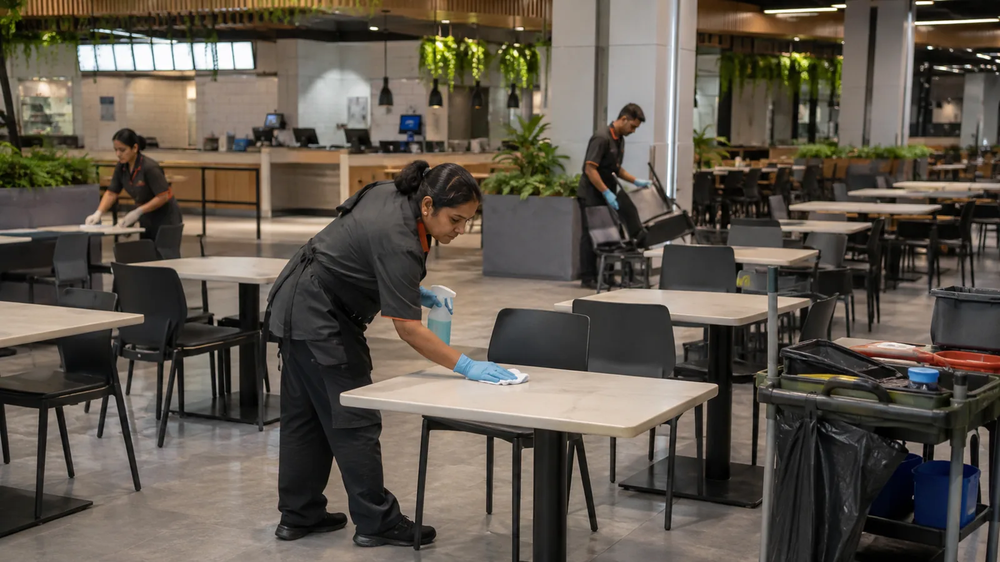
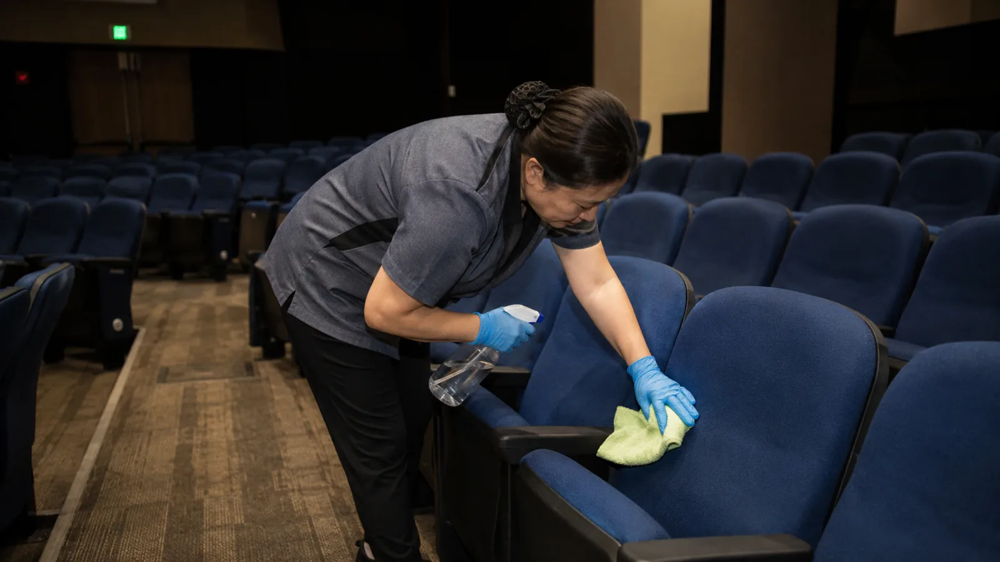

공실은 결과이고, 원인은 관리에 있습니다
임대가 안 되는 건물 대부분은 임대료가 비싸서가 아니라, 만기가 다가오는 것을 몰랐거나 임차사의 불만을 방치했거나 공실이 난 뒤에야 움직였기 때문입니다. 지유공간개발은 다섯 가지 숫자로 공실을 관리합니다.
공실 기간
퇴거일부터 다음 입주일까지
가장 먼저 줄여야 하는 숫자. 90일을 넘기면 조건을 다시 설계합니다.
임대율
임대 면적 ÷ 임대 가능 면적
층별·호실별로 관리하고, 만기 6개월 이내 면적을 따로 표시합니다.
갱신율
만기 임차사 중 재계약 비율
임차사 관리의 성적표. 갱신이 늘면 공실 비용과 중개 비용이 같이 줄어듭니다.
임대료 갭
시장 임대료 대비 현재 임대료
조정 여지가 있는지, 아니면 공간 자체를 바꿔야 하는지를 가르는 근거입니다.
수납률은 자산관리(PM) 보고에 포함됩니다. 다섯 숫자를 매달 같은 표로 보고하고, 흐름이 나빠지는 층부터 손을 댑니다.
공실 관리 사이클
공실이 난 뒤에 중개사에 전화하는 것이 아니라, 만기 12개월 전부터 시작하는 일정입니다.
- D-12
갱신 협의 시작
만기 12개월 전 임차사 면담. 계속 있을 의사, 불만, 요청 사항을 듣습니다.
- D-9
조건 설계
시장 임대료와 임차사 상황을 비교해 갱신 조건을 제안합니다. 무리한 인상보다 갱신이 우선입니다.
- D-6
대체 임차사 탐색
갱신이 어려우면 6개월 전부터 중개법인과 임대 안내를 시작합니다. 공실 없이 교체가 목표입니다.
- D-1
퇴거 · 원상복구
원상복구 범위를 사전에 합의하고, 퇴거 즉시 청소·수선·도장으로 임대 가능 상태를 만듭니다.
- D+0
임대 마케팅
층별 조건표, 사진, 도면을 갖춘 임대 안내 자료로 중개법인·직접 문의를 관리합니다.
- D+90
판단
90일 안에 임차가 안 되면 조건 재설계 또는 개발 대상으로 넘깁니다. 기다리기만 하지 않습니다.
임차사 관리
임차사가 오래 머무는 것이 가장 싼 공실 대책입니다. 그러려면 요청에 언제까지 답하는지, 민원은 누가 처리하는지, 연체는 어떻게 대응하는지가 정해져 있어야 합니다.

- 입주 세팅
- 입주 전 점검, 출입·주차 등록, 관리 규정 안내, 인테리어 공사 협의. 첫 한 달의 경험이 갱신을 정합니다
- 정기 소통
- 분기마다 임차사 면담. 불만과 요청을 미리 듣고, 건물 운영 계획을 먼저 알립니다
- 민원 · 요청 응대
- 접수 즉시 담당자 배정, 24시간 내 1차 답변, 처리 기한 안내. 시설 민원은 FM 팀이 바로 받습니다
- 연체 대응
- 연체 7일 안내, 30일 면담, 60일 계약 조항에 따른 조치. 감정이 아니라 절차로 처리합니다
- 퇴거 · 원상복구
- 원상복구 범위와 비용 기준을 계약 때 합의해 퇴거 시 분쟁을 없앱니다
- 임차사 구성 관리
- 업종 겹침, 층별 조합, 앵커 임차사 유치를 건물 전체 관점에서 조정합니다
공실 해결, 세 가지 길
공실마다 답이 다릅니다. 비용이 적게 드는 순서로 검토하고, 앞 단계로 안 되는 공간만 다음 단계로 넘깁니다.
조건을 조정해 임대한다
임대료, 무상 임대 기간(렌트프리), 계약 기간, 원상복구 조건을 시장에 맞게 다시 설계합니다. 공사 없이 해결되는 공실이 생각보다 많습니다.
공간을 정비해 임대한다
바닥·천장·조명·화장실·출입구처럼 첫인상을 정하는 부분을 손보고, 층 분할이나 통합으로 임대 단위를 바꿉니다. 인테리어 PM이 견적과 공사를 관리합니다.
직접 개발해 수익공간으로 바꾼다
임대 수요 자체가 없는 공간은 업종과 수익모델을 다시 설계합니다. 운영형 공간(회의·촬영·교육·팝업·무인)으로 바꾸거나, 노후 개선과 묶어 건물 전체의 임대경쟁력을 올립니다.
임대 마케팅
중개사에 맡기고 기다리는 것과, 자료를 갖추고 중개사를 움직이는 것은 다릅니다. 지유공간개발은 직접 중개하지 않고, 중개법인이 일하기 쉬운 상태를 만듭니다.
- 임대 안내 자료 — 층별 조건표, 도면, 사진, 관리비 내역, 주차·출입 조건을 한 장으로. 문의가 오면 바로 보냅니다.
- 중개법인 협업 — 상권과 업종에 맞는 중개법인을 정하고, 수수료와 정보 공유 기준을 계약으로 정리합니다.
- 임차 후보 관리 — 문의부터 답사, 조건 협의, 계약까지 후보별 진행 상황을 기록합니다. 놓치는 문의가 없게 합니다.
- 온라인 노출 — 임대 플랫폼과 지도 서비스에 사진·조건을 통일해 올리고, 오래된 매물 정보는 내립니다.
- 직접 유치 — 관리 중인 다른 건물의 임차사, 지유코퍼레이션 관리 네트워크, 확장 수요가 있는 업종에 먼저 제안합니다.
